Simulations behind the FBG Whisker experiments
Two sets of simulations shaped the FBG Whisker experiments. A 2D model of a pitching fishtail showed the wake each stroke leaves behind, and guided the fishtail parameters we used in the pool. A 3D fluid–structure model of the wavy whisker on its FBG base showed where the flow load goes, and guided how we built the whisker.
The fishtail wake
Which stroke leaves a wake the whisker can read?
The fishtail is a NACA 0012 foil. In the simulations it pitches by ±A about a point at its head, following the joint motion given by the URDF of our experimental fishtail; in the translating runs that point also moves forward. It is not a model of a swimming fish: the runs reproduce our experimental setup. All use A = 0.4 rad; the fishtail either translates or is held in place.
- f
- pitching frequency (Hz)
- Ap–p
- peak-to-peak amplitude of the tail tip (m)
- U
- swimming or translation speed (m/s)
We chose the stroke by its Strouhal number, which sets the kind of wake. Sharks, bony fish and dolphins cruise at St ≈ 0.2–0.4, where the wake is a reverse von Kármán street; at higher St it becomes a meandering jet. In simulation, St = 0.2 sheds vortices far apart, St = 0.35 gives a regular reverse von Kármán street, and St = 0.7 a meandering jet, as does a fishtail pitching in place (U = 0). We used St = 0.35 (1.2 Hz, 0.46 m/s) in the towed experiments.
Note the color ranges: ±100 s⁻¹ for the translating runs and ±200 s⁻¹ for the fixed one.
The whisker in flow
Where does the load from the flow go?
The 3D model is the wavy, tapered whisker on its base, with two FBGs along the arms of the base cross. A steady fluid–structure interaction (FSI) simulation in Simcenter STAR-CCM+ couples the flow, solved with the k–ω SST turbulence model, to the deforming whisker.


| Part | Material | E | ν | ρ (kg/m³) |
|---|---|---|---|---|
| Base | VeroWhite | 3 GPa | 0.40 | 1180 |
| Core | NiTi | 60 GPa | 0.33 | 6450 |
| Whisker shell | Rubber, Shore 50A | 2 MPa | 0.49 | 1200 |
| Sensor | FBG fiber | 75 GPa | 0.30 | 2200 |
The rubber was also modeled as hyperelastic (Mooney–Rivlin, C10 = 0.183 MPa, C01 = 0.046 MPa, K = 1000 MPa); the linear and hyperelastic models gave similar results.
Mesh Polyhedral cells, prism layers, wake refinement
Polyhedral cells fill the fluid, the solid parts get a finer mesh, and two prism layers on the walls (0.02 mm in total) give a wall y+ of about 1. The baseline mesh has 2.75 M cells (0.71 M fluid, 2.04 M solid). Refining the wake to a 10% cell size (10.75 M cells) resolves the wake behind the base but not behind the whisker; a 2% refinement (18.4 M cells) resolves both.


The flow field
At 0.3 m/s inflow, the flow wraps around the whisker and the raised cross of the base. The whisker sits off-center on the base, so the flow around the base is uneven. Vorticity is larger toward the tip of the whisker.

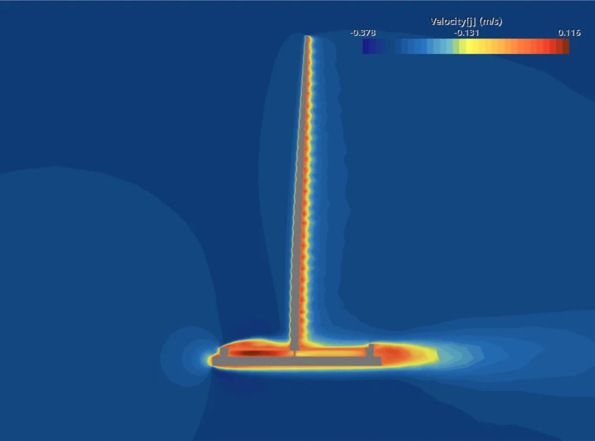
Velocity, y component

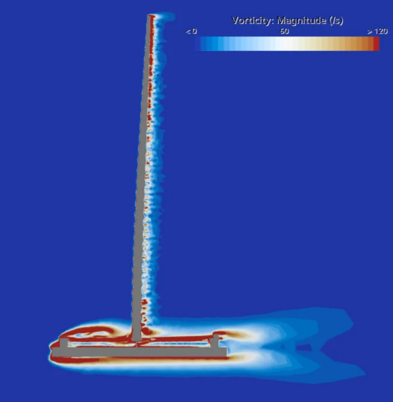
Vorticity magnitude

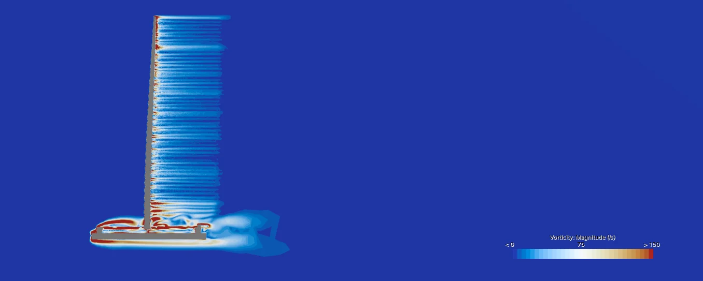

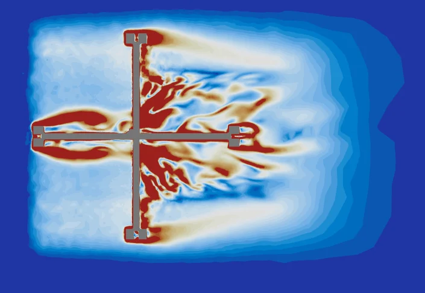
z = 0.217 m

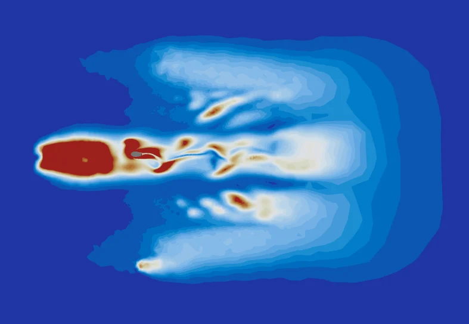
z = 0.24 m

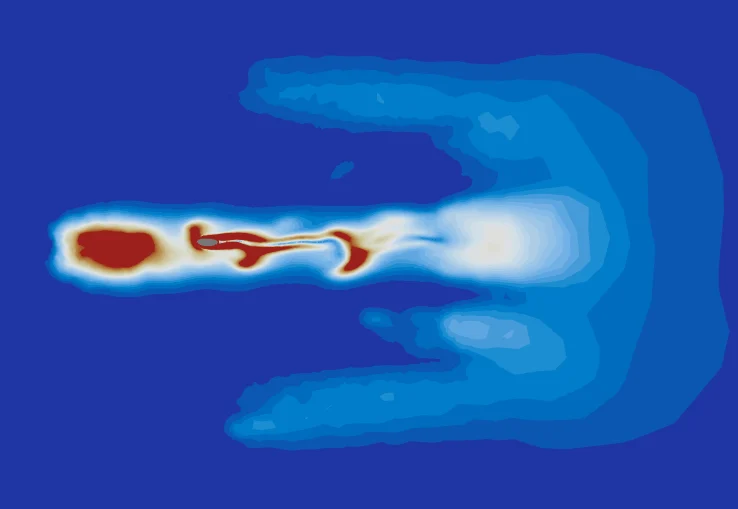
z = 0.25 m

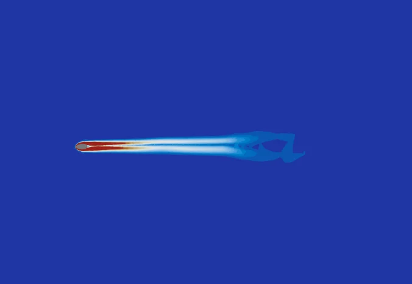
z = 0.30 m
Most of the bending stays in the whisker
A first round of runs used a thinner, 0.2 mm NiTi core and swept the inflow from 0.01 to 0.19 m/s. At 0.19 m/s the whisker bends by about 25 mm, while the base, where the FBGs sit, moves by only micrometers. The base displacement grows quadratically with flow speed.

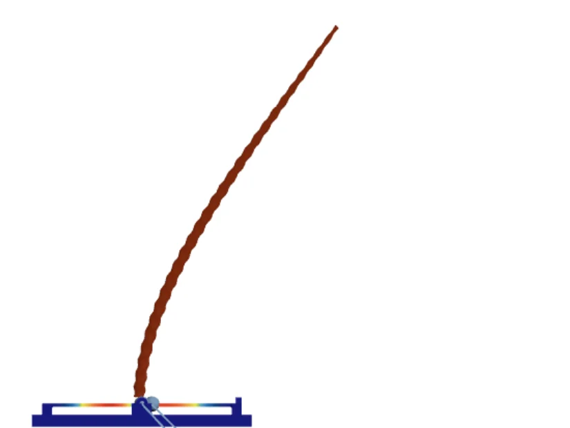
Whisker deflection: about 25 mm

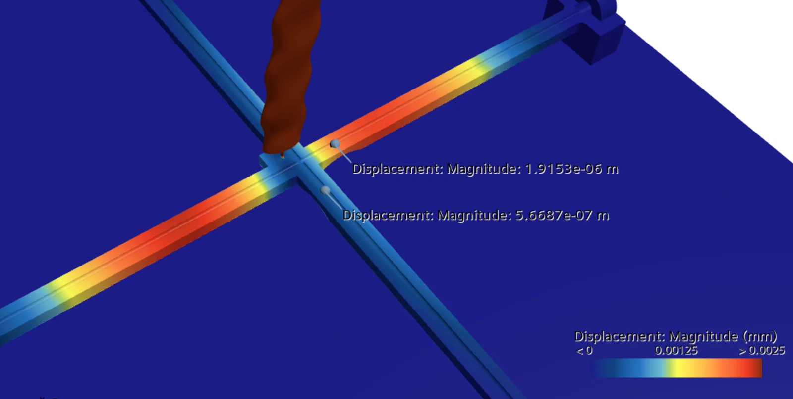
Base cross displacement: 0–0.0025 mm

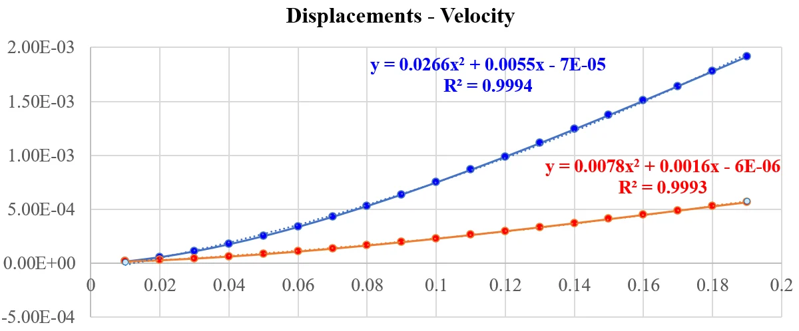
Because the whisker takes the bending, a larger FBG reading has to come from how the whisker is built and joined to the base. That is what the design study explores.
Design study
Can the FBG read more while the whisker keeps its stiffness?
The goal was to increase the FBG displacement, the sensor's reading, while maintaining the whisker's stiffness, especially at the tip. Starting from the reference design (100 mm whisker, 0.4 mm NiTi core running through to the base, FBG 2 mm above the base), each run changes one feature. All runs are at 0.3 m/s.

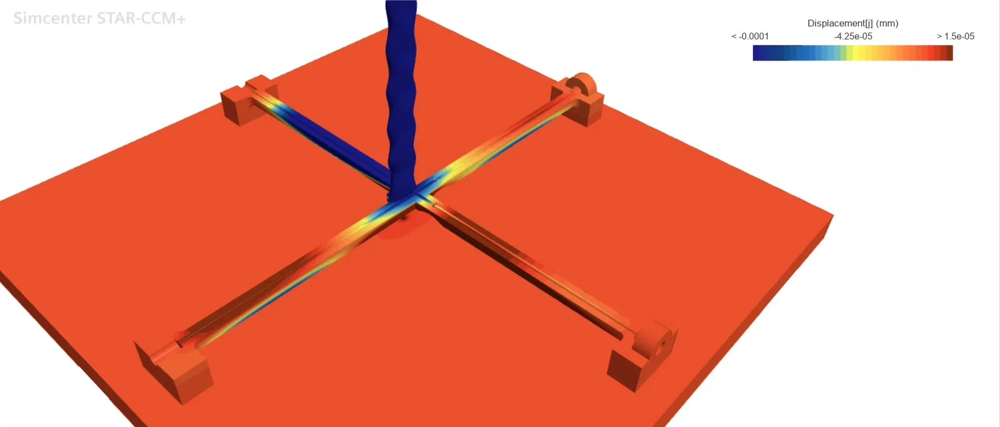
Along the flow, −1×10⁻⁴ to 1.5×10⁻⁵ mm

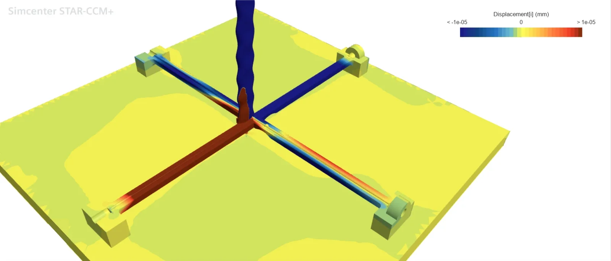
Across the flow, ±1×10⁻⁵ mm

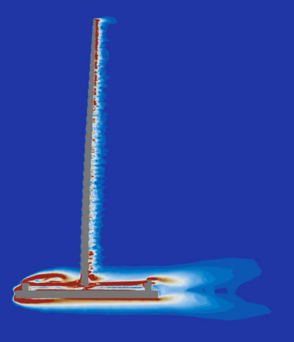

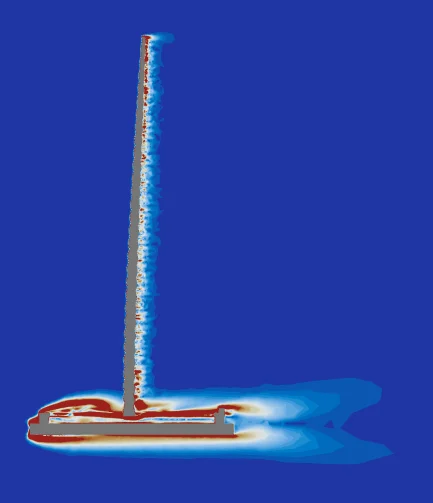

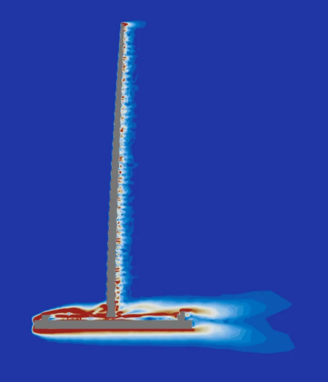

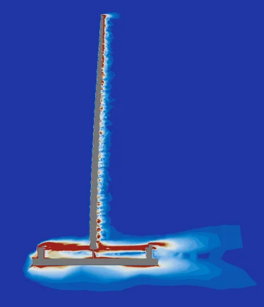

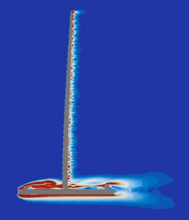

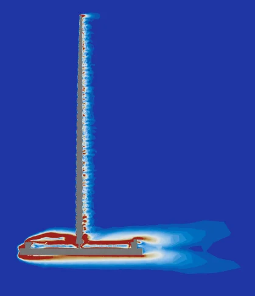

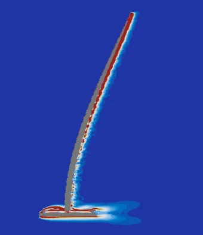

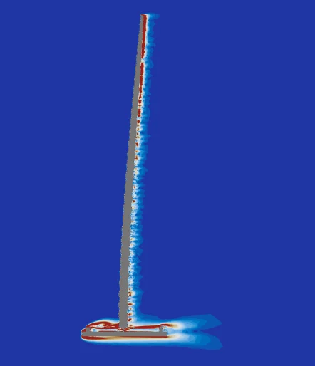
Simulation cases for the tapered wavy whisker
| No. | Change | Max. displacement Y, along flow | Max. displacement X, across flow | Vorticity | |||
|---|---|---|---|---|---|---|---|
| Value (mm) | Increase (%) | Value (mm) | Increase (%) | Whisker | Base | ||
| 1 | Reference | −5.9668×10⁻⁵ | / | −1.6489×10⁻⁶ | / | ref. | |
| 3 | Core ends at the FBG | 5.0205×10⁻⁵ | −15.86 | 1.8992×10⁻⁵ | 1051.80 | ↑ (tip end ↓) | ↓ |
| 3′ | Core ends at the FBG, 1 mm gap | 4.7894×10⁻⁵ | −19.73 | 1.7646×10⁻⁵ | 970.17 | ↓↓↓ | ↓↓ |
| 4 | FBG gap 4 mm | −4.3407×10⁻⁵ | −27.25 | 4.5128×10⁻⁶ | 173.69 | ↓ | ↑ |
| 4′ | FBG gap 1 mm | −7.6022×10⁻⁵ | 27.41 | −8.8737×10⁻⁶ | 438.16 | ↓↓ | ↓↓↓ |
| 5 | Tapered core, 0.8→0.2 mm | −7.5024×10⁻⁵ | 25.74 | −3.8713×10⁻⁶ | 134.78 | ↓↓↓ | ↓ |
| 6 | 200 mm whisker, 0.4 mm core | −3.0025×10⁻⁴ | 403.20 | −1.7281×10⁻⁵ | 948.03 | ↑↑ | ↓↓ |
| 6′ | 200 mm whisker, 0.67 mm core | −4.3809×10⁻⁴ | 634.21 | −3.9053×10⁻⁵ | 2268.43 | ↑ | ↓ |
Blue marks a better result and red a worse one: a larger FBG displacement, or less vorticity (↓). Increase is the change in magnitude from the reference; across-flow readings start about 36 times smaller, so their percentages run large. Preliminary: a simple decoupled analysis of steady runs changing one feature at a time, without a grid-independence check. The cases with the core ending at the FBG (3, 3′) were not validated, and vorticity changes greatly once coupled effects are included.
Findings
- Tapered core. A core tapered from 0.8 to 0.2 mm raised both FBG readings while the whisker deflected less.
- FBG–base gap. The gap reshapes the vortices around the base. A 1 mm gap raised both readings and reduced vorticity; a 4 mm gap lowered the along-flow reading.
- Where the core ends. Ending the core at the FBG instead of the base gave no gain along the flow but raised the across-flow reading more than tenfold.
- Whisker length. A 200 mm whisker read more, but with the same 0.4 mm core it was about 8 times softer, and its readings dropped once normalized by stiffness. With a 0.67 mm core the stiffness stayed similar and the readings still rose, with stronger vortices near the tip.
- FBG position. Each layout has its own best FBG position, and the whisker's curvature matters little, so the layout is fixed first and the FBG position second.
These comparisons guided the fabrication parameters of the whisker.
Notes
Limitations
Read the numbers as trends. The 3D runs are steady (RANS, k–ω SST), so they do not resolve vortex shedding or whisker vibration in time. Grid independence was not verified; across mesh settings, displacements agreed within 10%. Each design run changes one feature at a time, and the vorticity changes considerably once features are combined.
2D fishtail model
A 2D section shows the shedding pattern of each stroke at low cost. It leaves out 3D effects such as vortices from the fishtail's tip.
Not covered here
A prototype check of the 1 mm-gap design, other whisker shapes (cylindrical and non-tapered), other flow directions, and unsteady runs that couple the pitching fishtail to the 3D whisker.